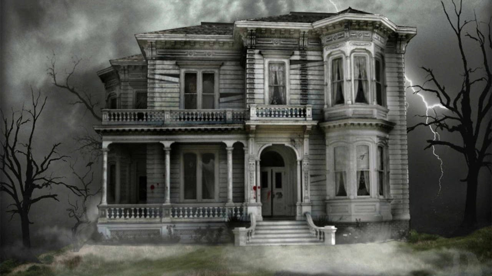

Here is my favorite haunted house!
This year's story:
"The Benevolent Goblin"
by Gesta Romanorum
In the kingdom of England there is a hillock in the midst of a dense wood. Thither in old days knights and their followers were wont to repair when tired and thirsty after the chase. When one of their number called out, "I thirst!" there immediately started up a Goblin with a cheerful countenance, clad in a crimson robe, and bearing in his outstretched hand a large drinking-horn richly ornamented with gold and precious jewels, and full of the most delicious, unknown beverage.
The Goblin presented the horn to the thirsty knight, who drank and instantly felt refreshed and cool. After the drinker had emptied the horn, the Goblin offered a silken napkin to wipe the mouth. Then, without waiting to be thanked, the strange creature vanished as suddenly as he had come.
Now once there was a knight of churlish nature, who was hunting alone in those parts. Feeling thirsty and fatigued, he visited the hillock and cried out:
"I thirst!"
Instantly the Goblin appeared and presented the horn. When the knight had drained it of its delicious beverage, instead of returning the horn, he thrust it into his bosom, and rode hastily away. He boasted far and wide of his deed, and his feudal lord hearing thereof caused him to be bound and cast into prison; then fearing lest he, too, might become partaker in the theft and ingratitude of the knight, the lord presented the jeweled horn to the King of England, who carefully preserved it among the royal treasures. But never again did the benevolent Goblin return to the hillock in the wood.